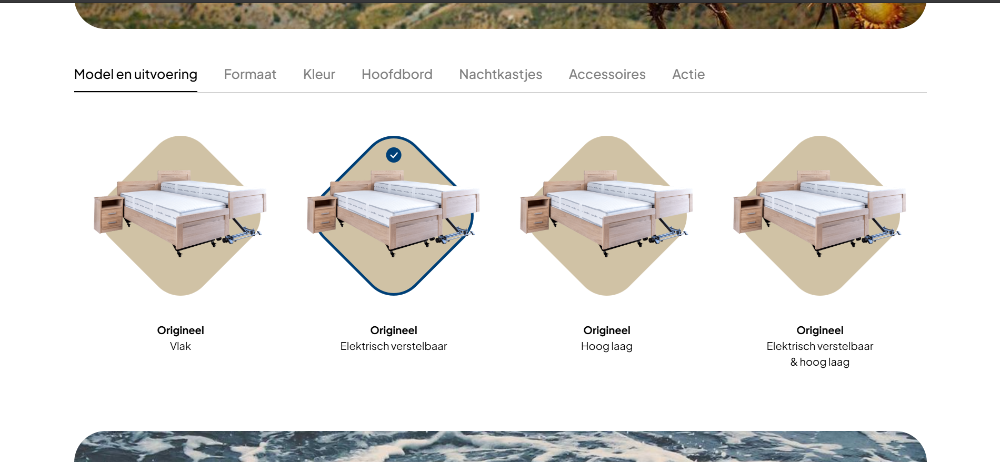
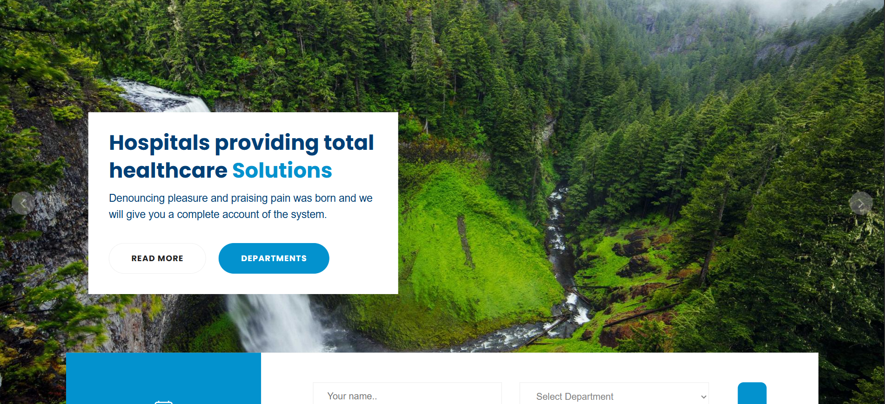

Taskmanager/To-do
In this website, you can add projects, and add tasks to them by clicking on the name.
You can give these tasks a priority-rating and a expiration date.
You can see tasks that are due today, or of which the deadline has passed in the "Today" page.
This was my first project using vue.js.

Aldenhuijsen
This was a learning-project from my internship with Influid
In this project you will see how I have learned to make a slider inside of another slider,
and how I have learned to make a new type of slider,
aside from other smaller things I didn't know how to do before.
I built this website using Bootstrap, SCSS and JQuery.

UpToMore
This was a learning-project from my internship with Influid
I recreated the website of UpToMore, because it has important sections, which are good practice for a starting developer.
E.g. the animated background, and the slider at the bottom
I built this website using Bootstrap, SCSS and JQuery.

Envatomarket hospital
This was a learning-project from my internship with Influid
I recreated a hospital website from Envatomarket. It is filled with difficult sections, e.g. "Make an appointment", multiple sliders, overlays, etc.
Which makes this a really good excercise.
I built this website using Bootstrap, SCSS and JQuery.